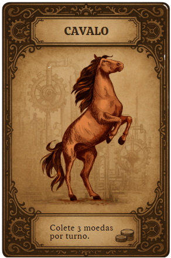
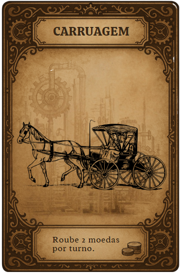
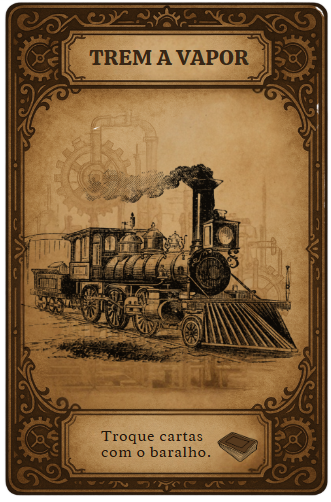
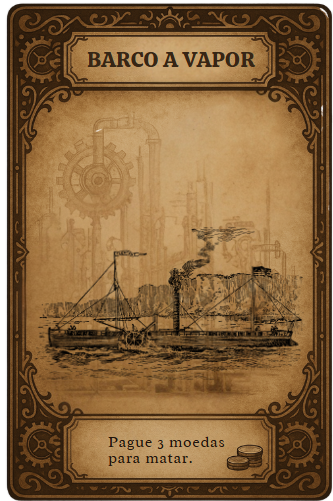
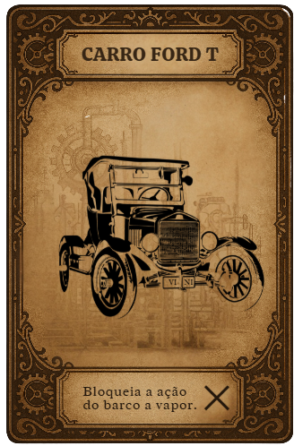
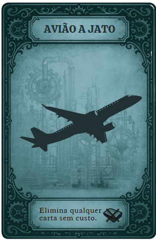
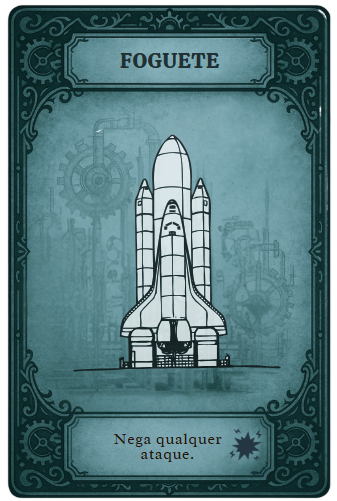

Um trabalho de: Arthur de Matos Lívia Michels Erick Vieira Lorenzo Augustin Renan Fraga Vinícius Bortoloti
Os meios de transporte são de extrema importância para movimentação das pessoas, mas também são utilizados para deslocar alimentos, animais, matérias-primas e muitas outras cargas. Possuem grande relevância para o desenvolvimento econômico das cidades e são classificados em: terrestre, aéreo e marítimo.
Primeira Revolução: Locomotiva a vapor, ferrovias, barcos a vapor.
Segunda Revolução: Automóvel, caminhões, ônibus, avião, bonde elétrico, metrô.
Terceira Revolução: Veículos mais eficientes e sustentáveis, logística otimizada, sistemas de rastreamento.
Evoluíram de meios simples, como carroças, para sistemas mecanizados com máquinas a vapor, depois motores a combustão e, por fim, tecnologias digitais integradas, tendo uma grande redução no tempo de deslocamento, aumento da capacidade de carga e melhorias na segurança e no controle logístico.
A urbanização acelerada, a criação de redes de transporte interligadas (ferrovias, rodovias, aeroportos), a globalização do comércio e a integração regional, além da transformação das cidades com sistemas de transporte público.
Aumento da mobilidade, acesso a empregos e serviços, mudanças nos padrões de vida, maior conectividade entre regiões, mas também desafios como congestionamentos, poluição e dependência de combustíveis fósseis.
Primeira Revolução: Carvão mineral (máquinas a vapor).
Segunda Revolução: Petróleo (gasolina, diesel).
Terceira Revolução: Combustíveis fósseis ainda predominantes, mas com crescente uso de eletricidade e biocombustíveis.
Econômicos: Crescimento do comércio, criação de novas indústrias (automotiva, petrolífera e de tecnologia) e redução de custos logísticos. Porém, também surgiu uma forte dependência do petróleo, que é poluente, e o alto custo da infraestrutura tecnológica trouxe desafios para países menos desenvolvidos.
Ambientais: Trouxe poluição atmosférica (queima de carvão e combustíveis fósseis), aumento do consumo de energia e congestionamentos urbanos. Mas sistemas mais sustentáveis estão sendo buscados.
A Primeira Revolução Industrial, impulsionada pela máquina a vapor, marcou uma revolução nos transportes.
Ferrovias: O surgimento da locomotiva a vapor e, consequentemente, das ferrovias, foi a principal inovação. A primeira ferrovia pública de sucesso ligou Stockton a Darlington na Inglaterra em 1825, transportando carvão. Em 1830, a linha Liverpool-Manchester inaugurou o transporte de passageiros em grande escala. As ferrovias permitiram o transporte de grandes volumes de carvão e outros produtos a custos menores e em velocidades muito superiores às dos transportes anteriores. Tornaram-se cruciais para a expansão do comércio e da indústria.
Barcos a Vapor: A aplicação da máquina a vapor aos barcos (navios a vapor) revolucionou o transporte aquático. Embarcações como o Clermont, de Robert Fulton, em 1807, demonstraram a viabilidade da navegação fluvial e, posteriormente, marítima independente dos ventos e correntes, agilizando o comércio e a comunicação entre continentes.
Combustível: O principal combustível era o carvão mineral, utilizado nas máquinas a vapor das locomotivas e navios.
Criação da Locomotiva a Vapor e Ferrovias: Permitiu o transporte de grandes volumes de carga (especialmente carvão) e passageiros a velocidades inéditas, conectando centros industriais e portos.
Inovação do Barco a Vapor: Libertou o transporte aquático da dependência dos ventos, tornando as viagens fluviais e marítimas mais rápidas, seguras e previsíveis.
Aceleração do Transporte: Redução drástica do tempo de viagem e de entrega de mercadorias.
Redução de Custos: Transporte de grandes volumes a um custo unitário menor.
Expansão do Comércio e Indústria: Facilitação da distribuição de matérias-primas e produtos, impulsionando o crescimento econômico.
Integração Regional: Conectou áreas produtoras e consumidoras, facilitando a urbanização.
Poluição do Ar: Queima intensiva de carvão gerava fumaça e fuligem.
Deslocamento de Meios Tradicionais: Impactou os transportadores de carroças e outras formas mais antigas.
Acidentes: O início das ferrovias e barcos a vapor também trouxe novos tipos de acidentes.
A Segunda Revolução Industrial, caracterizada pela eletricidade, aço e petróleo, trouxe novos avanços e a popularização de outros meios de transporte.
Automóvel: A invenção do motor a combustão interna e a produção em massa do automóvel por Henry Ford (modelo T) tornaram o transporte individual e de mercadorias mais acessível e flexível. O uso de caminhões para carga e ônibus para passageiros se disseminou, exigindo o aprimoramento das rodovias.
Petróleo e Derivados: O petróleo e seus derivados (gasolina, diesel) tornaram-se os principais combustíveis, substituindo gradualmente o carvão em muitos setores de transporte.
Avião: O desenvolvimento do avião pelos Irmãos Wright no início do século XX inaugurou o transporte aéreo, revolucionando a velocidade e a distância que podiam ser percorridas, primeiramente para fins militares e depois civis.
Bonde e Metrô (Transporte Urbano): Nas cidades, o bonde elétrico e, posteriormente, o metrô surgiram como soluções de transporte público de massa, acompanhando o crescimento urbano. No Rio de Janeiro, os primeiros bondes puxados a burro surgiram em 1859, sendo eletrificados a partir de 1892. O metrô carioca começou a ser construído nos anos 1960.
Desenvolvimento do Motor a Combustão Interna e Automóvel: Inaugurou a era do transporte rodoviário, permitindo maior flexibilidade e transporte porta a porta, tanto para pessoas quanto para cargas. Expansão da Rede Rodoviária: A demanda por automóveis e caminhões impulsionou a construção e melhoria de estradas. Surgimento do Avião: Criou o modal de transporte mais rápido para longas distâncias, inicialmente para correio e depois passageiros e carga. Eletrificação de Transportes Urbanos: Bondes e metrôs elétricos revolucionaram o transporte de massa nas grandes cidades.
Mobilidade Individual e Flexibilidade: Acesso a transportes para mais pessoas e maior liberdade de rotas. Distribuição Abrangente: Possibilidade de alcançar locais não servidos por ferrovias ou rios. Novas Indústrias: Geração de indústrias automotivas, petrolíferas e de construção de estradas. Urbanização Acelerada: Facilitação do deslocamento diário de trabalhadores e moradores.
Aumento da Poluição Atmosférica: Emissões de gases dos motores a combustão. Congestionamento: Crescimento exponencial do número de veículos nas cidades. Dependência do Petróleo: Vulnerabilidade a crises de abastecimento e flutuações de preço. Acidentes de Trânsito: Aumento significativo de mortes e ferimentos em acidentes.
A Terceira Revolução Industrial, focou na tecnologia da informação, biotecnologia e novas fontes de energia, impactando a logística e a gestão dos transportes.
Logística e Conectividade: Houve uma otimização dos sistemas de transporte através da contenerização (padronização de cargas), do uso de satélites e sistemas de comunicação para rastreamento e gestão de frotas, e do desenvolvimento de redes multimodais (combinação de diferentes modais para otimizar o transporte de mercadorias).
Novas tecnologias de navegação e comunicação: Aprimoramento de sistemas de navegação (GPS) e comunicação em tempo real, aumentando a segurança e a eficiência.
Veículos mais eficientes: Busca por veículos mais eficientes e sustentáveis, embora os combustíveis fósseis ainda dominem.
Otimização Logística (Contenerização, Sistemas de Rastreamento): Padronização do transporte de carga, tornando-o mais eficiente e integrado entre diferentes modais (navio, trem, caminhão). Desenvolvimento de Sistemas de Comunicação e Navegação: GPS, satélites e tecnologias de informação otimizaram o planejamento de rotas, monitoramento de frotas e segurança. Transporte Intermodal e Multimodal: Maior integração entre os diferentes meios de transporte para otimizar as cadeias de suprimentos globais.
Aumento da Eficiência e Redução de Custos Logísticos: Otimização do fluxo de mercadorias, resultando em menores custos e tempos de entrega. Globalização do Comércio: Facilitação do transporte de bens em escala mundial. Maior Segurança e Rastreabilidade: Monitoramento em tempo real e controle preciso das operações de transporte. Desenvolvimento de Indústrias de Tecnologia e Software: Criação de novos setores relacionados à gestão de transportes e logística.
Aumento do Consumo de Energia Global: Mesmo com otimização, o volume de transporte global aumentou o consumo geral de energia. Complexidade Tecnológica: A dependência de sistemas complexos pode gerar vulnerabilidades. Barreiras de Acesso: Acesso a tecnologias de ponta pode ser desigual entre países.
Todo mundo pode mentir sobre o transporte que tem. Se for desafiado e estiver blefando, perde a carta. Se estiver dizendo a verdade, o desafiante perde uma carta. Quando alguém tem 7 moedas, pode dar um “Golpe Industrial” e eliminar uma carta sem usar poder. Ao chegar em 10 moedas, você é obrigado a gastar.
      Cobra 3 moedas do banco.
Não pode ser bloqueado.
Bloqueia a carruagem.
Rouba 2 moedas de outro jogador.
Pode ser bloqueada pelo trem.
Permite trocar secretamente suas cartas com o baralho.
Pode bloquear a ação de roubo da carruagem.
Quanto tiver 3 moedas pode escolher quem matar.
Pode ser bloqueado pelo Carro Ford T e foguete.
Bloqueia a eliminação do Barco a Vapor.
Apenas em partidas com mais de 4 jogadores.
Elimina qualquer carta sem custo.
Ao ser utilizada, carta volta ao baralho.
Pode ser bloquada pelo foguete.
Apenas em partidas com mais de 4 jogadores.
Bloqueia QUALQUER ataque.
Ao ser utilizada, carta volta ao baralho.
Materiais utilizados: Papel (com impressões).